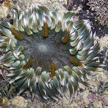
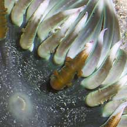
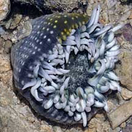

|
|
| sea anemones text index | photo index |
| Phylum Cnidaria > Class Anthozoa > Subclass Zoantharia/Hexacorallia > Order Actiniaria > Genus Phymanthus |
| Smooth
frilly anemone Phymanthus sp.* Family Phymantidae updated Nov 2019 Where seen? This anemone is seen on our Southern shores. Usually among coral rubble. Features: Diameter with tentacles extended 8-12cm. Tentacles generally smooth with only a few tentacles showing slight bumps where 'branches' might be in other frilly anemones. All tentacles generally white or a pale colour with patches of brown or other darker colours, often with pink tips. Sometimes six tentacles are more brightly coloured. Oral disk generally dark without a distinctive pattern. Body column with rows of pale bumps (verrucae). |
 Sentosa, Aug 05 |
 |
 Sisters Island, Feb 10 |
*Species are difficult to positively identify without close examination.
On this website, they are grouped by external features for convenience of display.
| Smooth frilly sea anemones on Singapore shores |
On wildsingapore
flickr
|
| Other sightings on Singapore shores |